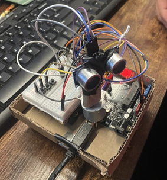
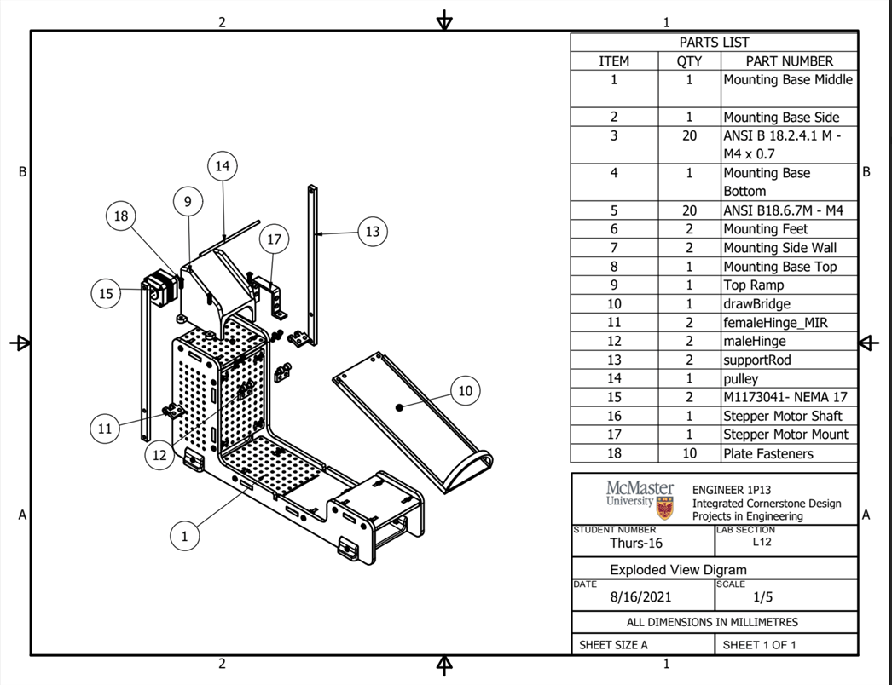

INTEGRATED / SYSTEMS / ROBOTICS
Integrated
Cross-domain projects where software, hardware, and actuation have to work together to make the system useful.
Related Projects

Ultrasonic Room Scanner
A stepper-motor-driven ultrasonic mapper that sweeps a room, filters readings, and exports angle-distance data for 2D shape reconstruction.

Airport Sorting System
A simulated luggage transport and sorting system combining Python routing, a robotic arm, and a custom bridge mechanism.